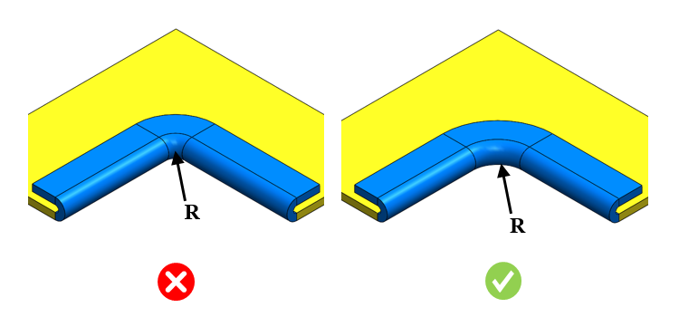

シートメタルの場合、製造の容易さおよび部品の安全な取り扱いのために、ヘム部には最小コーナー半径を設けることが不可欠です。
ヘムは、露出したエッジを補強または仕上げるために使用されます。製造を容易にするため、ヘムのコーナー部には特定の最小半径値を設定する必要があります。ヘムの最小コーナー半径を変更することで、投影コーナー半径を調整できます。
このルールは、オープンヘムおよびクローズドヘムのみに適用されます。
ユーザーの要件に基づいて、ヘムの最小コーナー半径の値を個別に設定してください。
ルール UI では、材料の一覧が 材料マッピング（Map Material） から読み込まれ、ユーザーは材料およびそれぞれの値を設定することができます。
材料とその値を設定した後、Ctrl+M コマンドを使用して、ルール UI 上で材料グループおよびグレードとともに、設定済み材料の一覧をフィルタリングして表示できます。同じキー（Ctrl+M）を使用して、フィルターをリセットします。

ここでは、
R = 投影コーナー半径